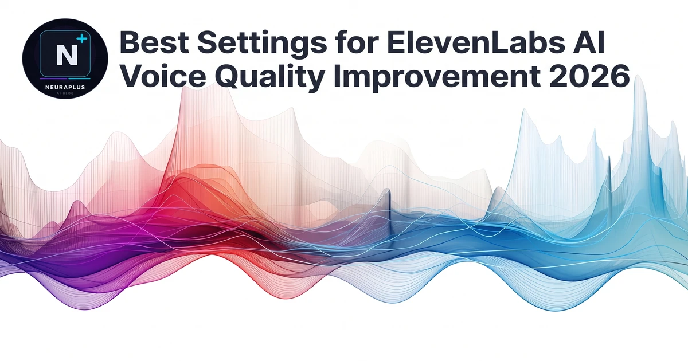

Best Settings for ElevenLabs AI Voice Quality Improvement 2026

Achieving studio-grade AI voice output isn't just about picking the right model — it's about mastering the precise combination of settings that ElevenLabs provides. Many creators settle for default configurations, unaware that subtle adjustments to stability, clarity, style exaggeration, and punctuation handling can transform robotic-sounding synthesis into indistinguishable human narration. This guide on best settings for ElevenLabs AI voice quality improvement 2026 breaks down every parameter, explains the science behind optimal tuning, and provides actionable presets for different content types.
Quick Insight: Setting stability to 100% doesn't make a voice "better" — it makes it monotonous. The sweet spot depends entirely on your content type, which is why professional creators maintain preset configurations rather than relying on defaults.
Core Parameters & Optimal Ranges
ElevenLabs' interface presents three primary sliders that control voice characteristics. Understanding how they interact is crucial for consistent quality. Stability governs emotional consistency versus natural variation. Clarity + Similarity Boost enhances pronunciation accuracy and maintains timbre consistency. Style Exaggeration amplifies emotional delivery but can introduce artifacts if pushed too far.
Stability & Clarity: The Foundation of Natural Speech
The stability slider is often misunderstood. Setting it to 100% strips away the micro-variations in pitch and timing that listeners subconsciously associate with authenticity. For technical tutorials or corporate presentations, aim for 65-75% stability to maintain clarity while avoiding robotic flatness. For storytelling, podcasts, or character dialogue, drop it to 40-55% to allow natural emotional arcs. Clarity + Similarity Boost should generally stay between 75-90% — pushing it to 100% can cause the AI to over-enunciate, creating an unnatural "news anchor" effect.
The interaction between these two sliders is multiplicative: high stability + high clarity yields precise but rigid delivery, while low stability + moderate clarity produces expressive but occasionally inconsistent output. Finding your baseline requires A/B testing with 30-second samples before committing to long-form generation.
Style Exaggeration & Model Selection Strategy
Style Exaggeration is ElevenLabs' emotional amplifier, but it's the most frequently misconfigured setting. Values above 60% often introduce phonetic distortions or unnatural pitch swings that break immersion. For marketing videos, 30-45% adds compelling emphasis without sacrificing intelligibility. For meditation scripts or ASMR-style content, keep it at 10-20% to preserve calm, measured delivery.
Model selection matters equally: the Turbo v2.5 model prioritizes speed and works well for real-time applications, while the Multilingual v2 model excels at cross-language consistency and emotional nuance. For automated pipelines requiring predictable output, Turbo v2.5 with stability locked at 70% delivers reliable results. For creative projects where vocal character matters, Multilingual v2 at 50% stability unlocks richer timbral variation.
Content-Specific Preset Configurations
Different content formats demand different acoustic profiles. Use these battle-tested presets as starting points, then fine-tune based on your specific voice and audience expectations:
| Content Type | Stability | Clarity | Style | Model |
|---|---|---|---|---|
| Technical Tutorials | 70% | 85% | 20% | Turbo v2.5 |
| Audiobooks | 55% | 80% | 35% | Multilingual v2 |
| Marketing / Promo | 45% | 75% | 45% | Turbo v2.5 |
| E-Learning | 75% | 90% | 15% | Multilingual v2 |
SSML Markup & Punctuation Mastery
Beyond sliders, Speech Synthesis Markup Language (SSML) gives you surgical control over pacing, emphasis, and pronunciation. Inserting a break tag creates natural pauses between complex ideas, while emphasis tags highlight key terms. When combined with ElevenLabs' native parsing engine, proper markup reduces post-editing time by roughly 60% and dramatically improves listener comprehension.
<!-- Natural pause between ideas --> Welcome to the tutorial<break time="300ms"/>Let's begin with the basics. <!-- Emphasize a key term --> This is the <emphasis level="moderate">most important</emphasis> setting.
Chunking Strategy & Context Management
ElevenLabs processes text in contextual windows, meaning the AI "remembers" tone and pacing from preceding sentences. Generating 2,500 characters in one pass often causes pacing drift or emotional inconsistency by the final paragraph. Professional creators break scripts into 500-800 character chunks, generate each separately with identical settings, then stitch them together in post-production.
When chunking, end each segment with a complete sentence and begin the next with a capital letter to preserve grammatical context. For long-form projects, maintain a "voice reference clip" — a 30-second generation you approve as the gold standard — then compare subsequent chunks against it for consistency.
Common mistake: Changing model versions mid-project. Prosody characteristics vary between Turbo and Multilingual engines, so switching partway through a long-form project will introduce audible inconsistency.
Post-Production & Audio Engineering Polish
Even perfectly tuned AI voices benefit from light post-processing. Export as WAV for maximum fidelity, then import into a DAW like Audacity or Adobe Audition. Apply a gentle high-pass filter at 80Hz to remove rumble, normalize to -16 LUFS for podcasts or -23 LUFS for broadcast, and add a 2:1 compressor with a 3dB threshold to smooth dynamic range. Always export final masters as 320kbps MP3 or 24-bit WAV.
Workflow Integration & Scalability
As your voice production scales, manual slider adjustments become inefficient. ElevenLabs' API allows you to save voice settings as JSON presets, version-control them alongside your scripts, and deploy them across automated pipelines. Combine webhook triggers with batch generation to produce hundreds of localized voiceovers overnight. Maintain a centralized "voice style guide" documenting optimal settings per content type, approved model versions, and post-processing chains.
# Example: automated batch generation via API import requests preset = { "stability": 0.70, "similarity_boost": 0.85, "style": 0.20, "model_id": "eleven_turbo_v2_5" } # Loop through script chunks and generate with consistent settings for chunk in script_chunks: response = requests.post(api_url, json={"text": chunk, **preset})
Future-Proofing & Continuous Optimization
ElevenLabs releases model updates regularly, each bringing improved prosody and reduced artifacts. Schedule periodic A/B tests comparing your current presets against new model versions. Document performance metrics — listener retention, support tickets about audio clarity, and production time per minute of finished audio — and treat voice configuration as living documentation that evolves with every platform update.
Pro Tip: Create a "preset vault" in a shared drive containing JSON exports of your approved settings, sample audio clips, and processing chains. This institutional knowledge prevents quality drift when team members change or projects scale.